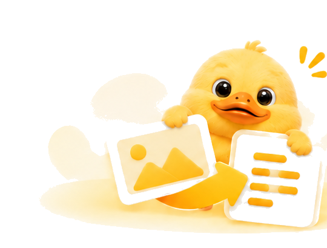
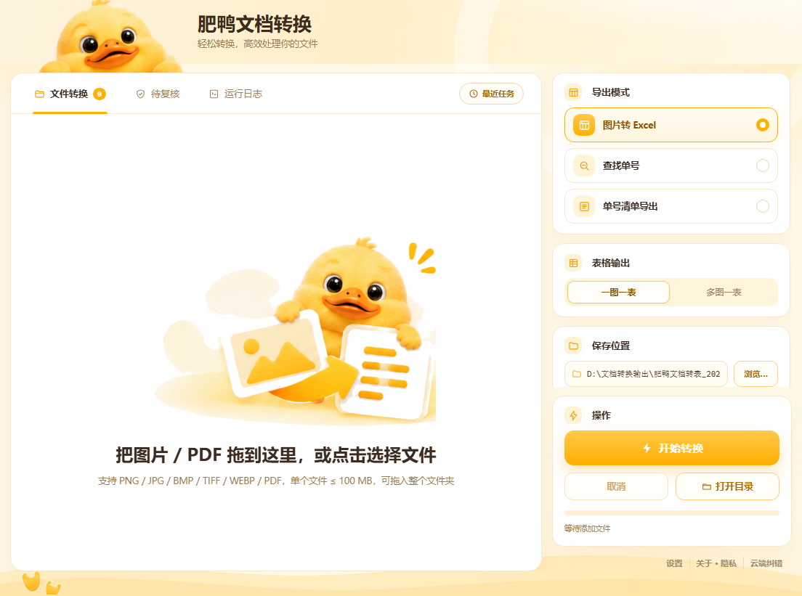

把拍歪的表格照片，
变成能编辑的 Excel
拖进图片或 PDF，几秒后得到保留行列结构的 Excel。不用注册，不用上传，不用担心资料泄露。
国内镜像：Gitee / 123 云盘即将上线，着急可先访问 GitHub Releases。

打开就能用，没有学习成本
左边拖文件，右边选模式，点一下开始。识别没把握的单元格会集中到「待复核」。

不只是「识别文字」
从拍照到 Excel，把中间那些麻烦事一起处理掉。
图片转 Excel
识别照片、截图、扫描件里的表格，按原版式逐行逐列还原，一页一个工作表。
PDF 逐页处理
多页 PDF、多页 TIFF 逐页识别，不丢页，适合合同、对账单、报表。
查找单号
粘贴完整或部分单号，在多张图片里找到它并定位到原图位置。
待复核
低置信度单元格集中展示，放大看原图、对照复识结果，标记核对或重拍。
最近任务
任务摘要和待复核快照保存在本机，关掉程序再打开还能继续核对。
拍摄质量提示
模糊、倾斜、反光会给出提示，帮你判断要不要补拍。
不需要教程
拖进来
把图片或 PDF 拖进窗口，也可以点「选择文件」或 Ctrl+V 粘贴截图。
选模式
一般保持默认的「图片转 Excel」；只想要单号就选「单号清单导出」。
拿结果
点「开始转换」，完成后「打开目录」，Excel 已经生成好了。
你的表格，只在你的电脑里
OCR 模型和推理全部在本机运行。不收集图片、文件名、识别结果，没有统计埋点，也不需要注册账号。
唯一可选的联网功能是「云端文本纠错」，默认关闭；开启后也只发送存疑单元格的局部裁剪图，不发送整张图片和编码字段。
- 默认完全离线，断网也能用
- 图片与识别结果不上传
- 版本检查只查询版本号，可在设置关闭
- 任务历史、配置、日志只写本机 AppData
- MIT 开源，代码可自行审计
下载前你可能想知道
收费吗？需要联网吗？
免费，MIT 开源，没有付费版和广告。识别不需要联网；只有你主动开启「云端文本纠错」或保持「版本检查」开启时才会联网。
Windows 弹出蓝色 SmartScreen 警告怎么办？
因为我们没有购买代码签名证书。点「更多信息 → 仍要运行」即可，也可以先运行随包附带的「解除锁定.bat」。
支持哪些格式？能处理多少文件？
支持 PNG / JPG / BMP / TIF / TIFF / WEBP / PDF；单文件上限 100 MB，可一次拖入整个文件夹，多页 PDF 会逐页识别。
识别不准怎么办？
尽量正对表格拍摄，让表格占满画面，避免反光和阴影。识别没把握的单元格会进入「待复核」，可以逐条对照原图核对。印刷体效果最好，潦草手写准确率有限。
支持 Mac 吗？可以商用吗？
目前支持 Windows 10 / 11 64 位，macOS 在规划中。MIT 许可证允许商用、修改和再分发，保留版权声明即可。